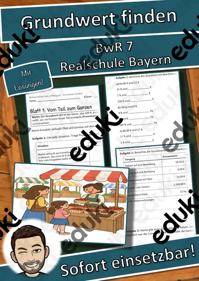
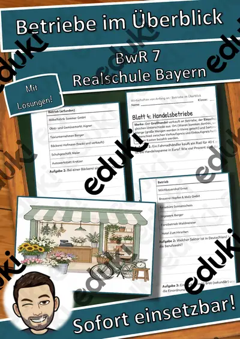
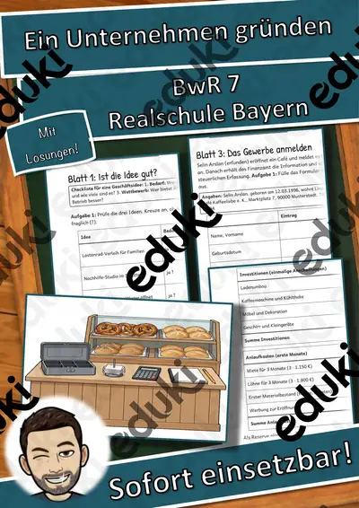

Materialpaket BwR Klasse 7 Realschule Bayern – Rechnungswesen: 5 Arbeitshefte mit Lösungen
5 Arbeitshefte BwR Klasse 7 (Realschule Bayern) – im Paket zum halben PreisDu unterrichtest BwR an der Realschule und möchtest nicht jedes Arbeitsblatt selbst erstellen? Dieses Paket bündelt 5 Arbeitshefte für BwR Klasse 7 zum Bereich „Rechnungswesen“. Alle Hefte sind aufeinander abgestimmt und enthalten Lösungen: Du sparst Vorbereitungszeit und hast durchgängig stimmige, fachlich geprüfte Aufgaben.
Preisvorteil und Zeitersparnis: Einzeln gekauft kosten die 5 Materialien regulär zusammen 15,95 €. Im Paket zahlst du nur 7,97 € und sparst damit rund 50 %. Dazu sparst du dir das Zusammensuchen und Abstimmen: Alles passt schon zusammen, ist sofort einsetzbar und liegt in einem Download bereit. Alle Materialien sind sorgfältig gearbeitet, vom Autor geprüft und enthalten Lösungen bzw. Musterlösungen, sodass du dir auch die Korrektur-Vorbereitung sparst.
Die 5 Materialien im Paket
Inventur und Inventar – Arbeitsheft mit Lösungen (BwR 7, Realschule Bayern): Die Lernenden begleiten die Inhaberin der Papierwerkstatt Federleicht e.Bilanz aufstellen und lesen – Arbeitsheft mit Lösungen (BwR 7, Realschule Bayern): Die Lernenden arbeiten mit der Bilanz der Lampenmanufaktur Lichtwerk Haas e.Geschäftsfälle und Bilanz – Arbeitsheft mit Lösungen (BwR 7, Realschule Bayern): K. durch acht Geschäftsfälle und erkennen, wie sich jeder Vorgang auf die Bilanz auswirkt.
Von der Bilanz zu den Konten – Arbeitsheft mit Lösungen (BwR 7, Realschule Bayern): Die Lernenden lösen die Eröffnungsbilanz der Bastelstube Rabe e.Umsatzsteuer im Betrieb – Arbeitsheft mit Lösungen (BwR 7, Realschule Bayern): Die Lernenden arbeiten mit dem Gartenmöbelwerk Grünhand e.Lehrplanbezug (LehrplanPLUS Bayern, Realschule, Betriebswirtschaftslehre/Rechnungswesen, Jahrgangsstufe 7)BwR Jahrgangsstufe 7, Lernbereich „Rechnungswesen“: Inventur und Inventar; Bilanz aufstellen und lesen; Geschäftsfälle und Bilanz; Von der Bilanz zu den Konten; Umsatzsteuer im Betrieb.
Jedes Arbeitsheft enthälterklärende Einstiege und Merkkästen
Aufgaben im Prüfungsstilvollständige Lösungen
Insgesamt umfasst das Paket 71 Seiten.
Einsatzmöglichkeiten
Die Hefte eignen sich für den Unterricht, Übungsphasen, Hausaufgaben, Wiederholung vor Schulaufgaben und Vertretungsstunden.
Viel Freude mit deiner Klasse wünscht dir Snice!
Ähnliche Materialien

Der Kontenplan: Ordnung im Rechnungswesen – Arbeitsheft mit Lösungen (BwR 8, Realschule Bayern)

Aufbau der Bilanz – Arbeitsheft mit Lösungen (BwR 7, Realschule Bayern)

Taschengeld – Arbeitsheft mit Lösungen (BwR 7, Realschule Bayern)

Grundwert finden – Arbeitsheft mit Lösungen (BwR 7, Realschule Bayern)

Buchungssätze lesen und verstehen – Arbeitsheft mit Lösungen (BwR 7, Realschule Bayern)

Betriebe im Überblick – Arbeitsheft mit Lösungen (BwR 7, Realschule Bayern)

Der Weg zur Unternehmensgründung – Arbeitsheft mit Lösungen (BwR 7, Realschule Bayern)